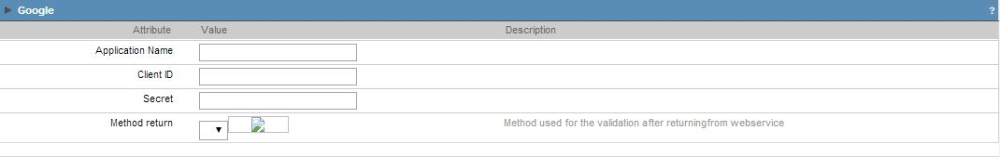
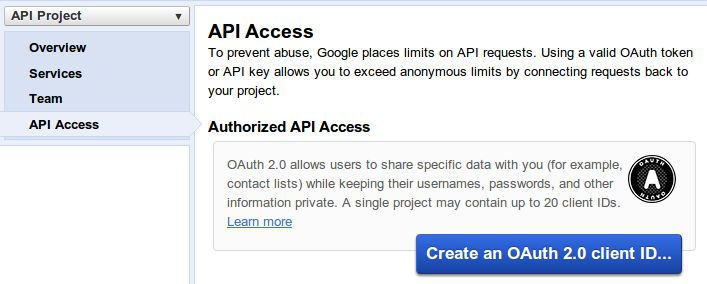
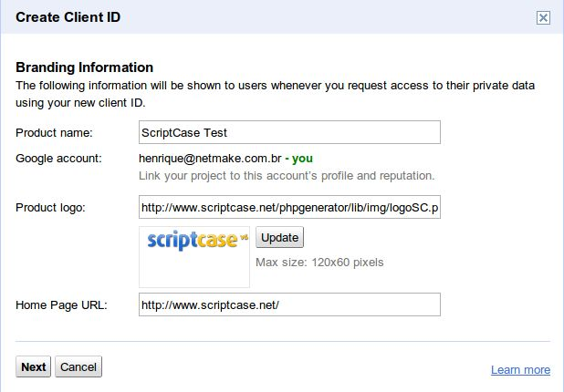
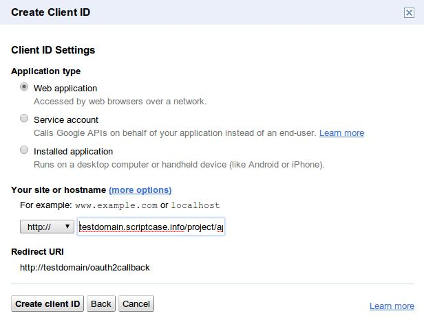
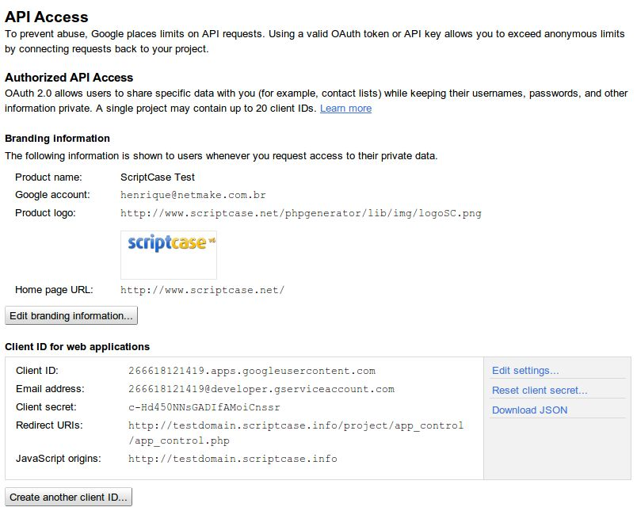

Google+

Image1: Google+ authentication Fields.
When creating a Google+ Authentication Button, you need to fill these fields:
- Application Name - Google+ Application Name.
- Client ID - Google+ Application ID. This Id will be given by the Google+ Developer's page.
- Secret - Google+ service will give you a secret key to enable your application to run on a website.
- Method return - Method to be ran when Google+ service return the data requested.

Image2: Google+ developpers page. (01/29/2013)
To create a Google+ application and receive your key and secret for your website, you must follow these steps:
- Go to https://code.google.com/apis/console/ and register your account
- On the "API Access" page click on "Create an OAuth2.0 client ID"
- Enter your Application details as asked and click "Next".

Image3: Application details.
Enter the Client ID as requested in the page and click "Create Client ID".

Image4: Client ID Details
On the next Page, you will find the data required by Scriptcase.

Image5: OAuth Keys
You can use this Client ID and Secret to connect an SC application to Google+.